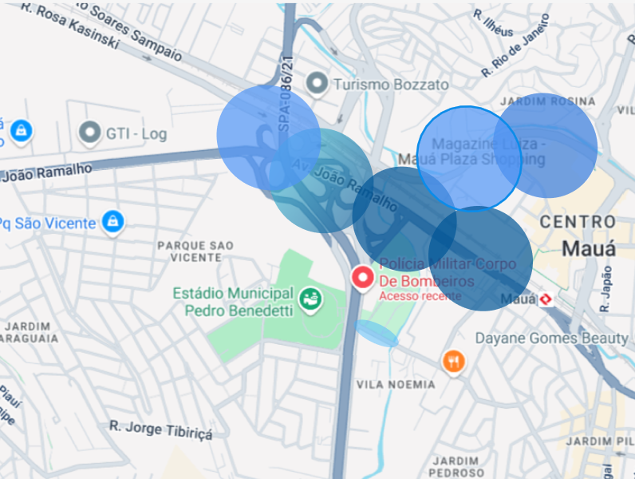
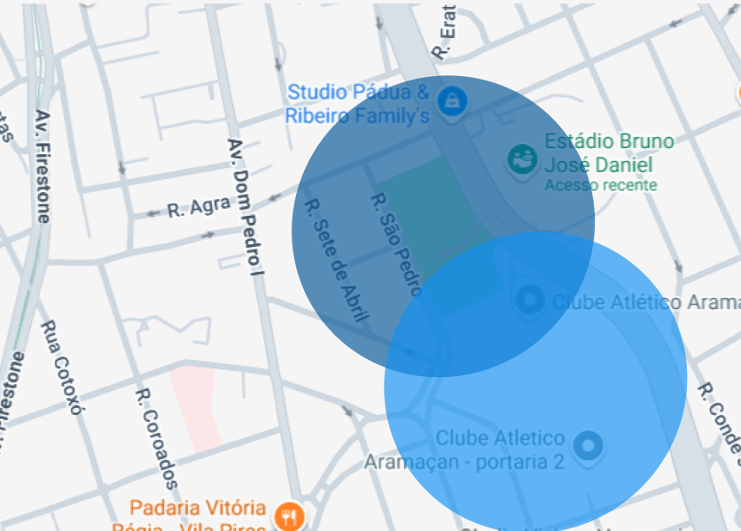

Quem Nós Somos
A BYSW é uma plataforma para apoiar à população em situações de enchentes, unindo mapeamento colaborativo, chatbot informativo e uma funcionalidade inédita: a integração com aplicativos de navegação (como Waze e Google Maps).
Os usuários podem relatar alagamentos em tempo real, alimentando o sistema com dados geolocalizados. Com base nesses relatos, a plataforma envia alertas aos navegadores, sugerindo replanejamento de rotas para motoristas, evitando regiões críticas. O chatbot orienta usuários sobre segurança, localização de abrigos e como agir em emergências. O sistema promove prevenção, resposta rápida e inovação acessível, com potencial real de salvar vidas e evitar perdas.
Na prática
Para indicar os riscos ou níveis de alagamentos, nosso sistema utiliza de marcações circulares nos mapas, sendo as marcações mais escuras áreas com alagamento forte e areas mais claras somente como risco ou alagementos fracos como nas imagens a baixo
Quando for uma area com muitos relevos, terão mais circulos para que possamos mostrar com melhor eficiência a area que irá/está sendo afetada(como na imagem a cima).
Mas quando for uma área mais plana, os circulos serão maiores, como na imagem a baixo
